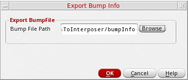

Saving Bumps to File
Virtuoso Stacked Silicon solution provides options to save bumps to a file. The file contains detailed information about the bumps, including their locations and connectivity information.
You can save bumps in the current die to a text file. You can later reuse this file to create similar bumps on other dies.
-
With the container or package layout open, launch the Edit-In-Concert mode by selecting Module – Edit-In_Concert.
The package design is displayed on the first tab, and the layouts of the die instances in the package are displayed on separate tabs. - Click the tab that contains the bumps.
-
Choose Module – Bump Management – Save Bumps to File. The Export Bump Info form is displayed.
 - Specify a file name and the location in the Bump File Path field. You can click Browse to select a location.
- Click OK.
Related Topics
- Export Bump Info Form (form reference)
Return to top